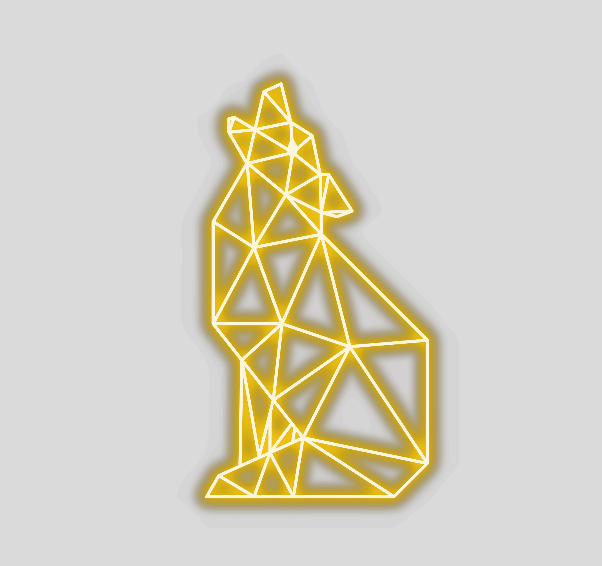

AURÉLIEN LELOUP — LinkedIn cover
1584 × 396 px · 4:1
Toggle safe-zone guides

Copenhagen · Denmark
Aurélien
Leloup
Full-Stack Developer
&
Cloud Engineer
10 years of experience
Java
Angular
AWS Certified